Degustazioni a Torino e dintorni
Degustazioni guidate di vino, birra, olio, caffè, cioccolato e cocktail a Torino e dintorni.
Cerca tutti i workshop18 attività in programma · aggiornato il 23 novembre 2026
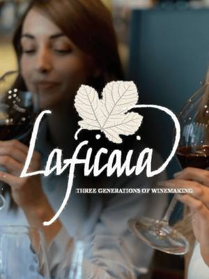
mer25novDegustazioniDegustazione: i vini di Laficaiamercoledì 25 novembre, 19:30–21:30Centro (TO) · 13 €con Winelivery Bar & Enoteca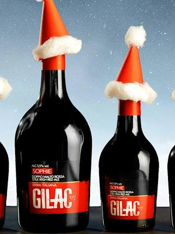
ven27novDegustazioniDegustazione: birre del birrificiovenerdì 27 novembre, 18:30–19:30Rivoli (TO) · Gratiscon Birrificio GILAC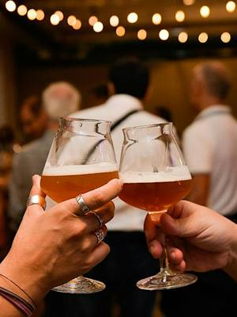
mar1dicDegustazioniDegustazione di birra: le birre di Natalemartedì 1 dicembre, 17:30–19:30Lingotto (TO) · 35 €con Eataly Torino Lingotto- mer2dicDegustazioniGrand Tasting: bollicine e Parmigianomercoledì 2 dicembre, 19:30–22:00Centro (TO) · 40 €con Signorvino
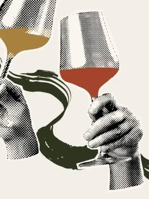
ven4dicDegustazioniDegustazione: i vini di La Sourcevenerdì 4 dicembreIvrea (TO) · 20 €con ZAC! con La Source Winefarm- ven4dicDegustazioniWine Club: i vitigni aromaticivenerdì 4 dicembre, 17:30–19:00Lingotto (TO) · 35 €con Eataly Torino Lingotto
- lun14dicDegustazioniBollicine fuori dagli schemi: degustazionelunedì 14 dicembre, 17:30–19:30Lingotto (TO) · 45 €con Eataly Torino Lingotto
- lun21dicDegustazioniItalia segreta: vitigni quasi scomparsilunedì 21 dicembre, 17:30–19:30Lingotto (TO) · 45 €con Eataly Torino Lingotto
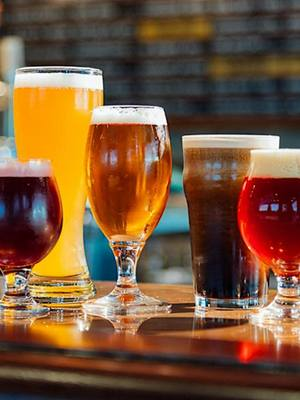
lun18genDegustazioniMaster Birra: degustazione di birrelunedì 18 gennaio, 17:30–19:30Lingotto (TO) · 120 €con Eataly Torino Lingotto- ven22genDegustazioniLe anime del Nebbiolo: degustazionevenerdì 22 gennaio, 17:30–19:30Lingotto (TO) · 45 €con Eataly Torino Lingotto
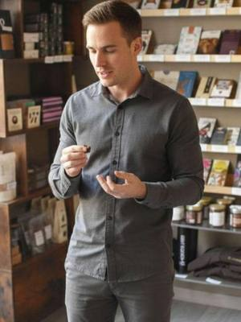
dataa sceltaDegustazioniDegustazione di cioccolato fineData a sceltaCentro (TO) · da 36 €con Chocolate7- dataa sceltaDegustazioniNegroni Experience: prepara il tuo cocktailData a sceltaPozzo Strada (TO) · da 45 €con Eccetera
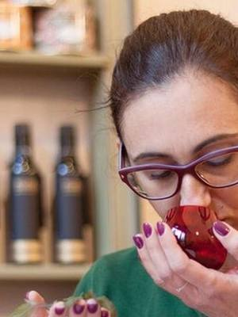
dataa sceltaDegustazioniDegustazione di olio, vino e formaggiData a sceltaCentro (TO) · da 56 €con L’Olio di Eva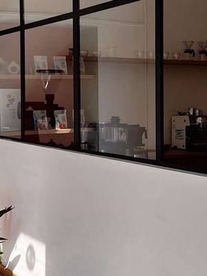
dataa sceltaDegustazioniDegustazione di caffè specialtyData a sceltaAurora (TO) · da 49 €con Santaromero Coffee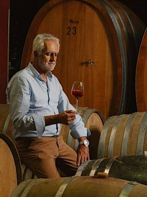
dataa sceltaDegustazioniVino e pietra: visita in cantina e assaggioData a scelta, 10:30Barge (CN) · da 25 €con L’Autin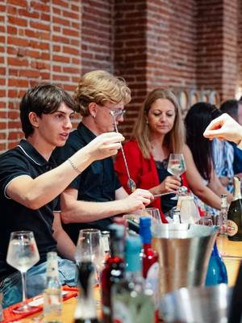
dataa sceltaDegustazioniMartini Cocktail Experience: mixologyOgni sabato e domenica, 15:30Chieri (TO) · da 39 €con Casa Martini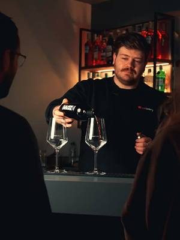
dataa sceltaDegustazioniDegustazione di vini piemontesiData a scelta, 18:00Centro (TO) · 34 €con Winelivery Bar & Enoteca- dataa sceltaDegustazioniDegustazione di vermouth in enotecaData a scelta, 18:30Centro (TO) · 34 €con Winelivery Bar & Enoteca